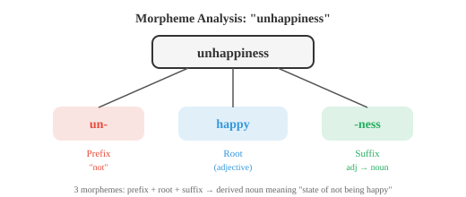
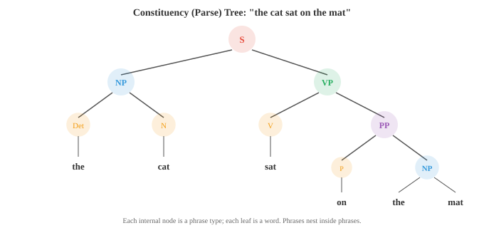

语言学基础¶
语言学提供了 NLP 系统隐式学习和利用的结构性词汇体系。本文涵盖形态学、syntax、semantics、语用学、音系学、constituency 与 dependency parsing，以及分布假说——这些人类语言科学为 AI 中的 tokenisation、语法和意义奠定了基础。
-
在构建能理解或生成语言的系统之前，我们需要先理解语言本身是如何运作的。
-
语言学是对语言进行科学研究的学科，它为 NLP 不断借用的概念词汇提供了框架。
-
即便是现代神经网络模型——那些从原始数据中学习语言的模型——也会隐式地重新发现语言学家数十年来已归纳整理的诸多结构。
-
语言在每个层面都有结构：构成词语的声音，构成词语的各个部分，将词语组合成句子的规则，这些句子所承载的意义，以及语境塑造解释的方式。我们将从底层到顶层逐一探讨每个层面。
-
形态学（Morphology） 研究词的内部结构。词并非不可分割的原子单位，它们由更小的有意义的单位——语素（morphemes）——构成。
-
单词"unhappiness"包含三个语素："un-"（前缀，意为"非"）、"happy"（词根）和"-ness"（后缀，将形容词转化为名词）。每个语素都对整体意义有所贡献。
-
词根（root）（或词干 stem）是承载核心意义的语素。"Happy"、"run"、"compute"都是词根。
-
词缀（affix） 是附着于词根以修饰其意义的语素。
-
英语有前缀（prefixes）（位于词根前：un-、re-、pre-）和后缀（suffixes）（位于词根后：-ing、-ed、-tion）。有些语言还有中缀（插入词根内部）和环缀（环绕词根）。

-
形态学过程有两种。屈折变化（Inflection） 改变词的语法属性而不改变其核心意义或词性："run"变为"runs"（第三人称）、"running"（进行时）、"ran"（过去时）。该词仍然是动词，意义不变。
-
派生（Derivation） 创造新词，通常改变词性："happy"（形容词）变为"happiness"（名词），"compute"（动词）变为"computation"（名词），再变为"computational"（形容词）。每次派生都改变意义和语法类别。
-
各语言在形态复杂性上差异极大。英语相对分析性（analytic）（每词语素少，依赖词序）。
-
土耳其语和芬兰语是黏着语（agglutinative）（一个词可以串联许多语素）。阿拉伯语和希伯来语使用模板形态（templatic morphology）（词根是辅音骨架，如 k-t-b 表示"书写"，通过插入不同元音模式来创造不同词汇：kitab"书"、kataba"他写了"、maktub"被写下的"）。
-
形态学对 NLP 至关重要，因为它影响 tokenisation。词级别的 tokeniser 将"run"、"runs"、"running"和"ran"视为四个无关的符号。
-
具有形态学意识的系统则能识别它们共享同一词根。子词 tokenisation（BPE、WordPiece）是形态学分析的统计近似，我们将在第 02 节介绍。
-
Syntax 研究词如何组合成短语和句子。每种语言都有规范词序和结构的规则，违反这些规则会产生无意义的语句。
-
"The cat sat on the mat"是符合英语语法的；"Mat the on sat cat the"则不是。
-
描述句法结构有两种主要框架。
-
短语结构语法（Phrase structure grammar）（也称为成分语法）认为句子是通过短语嵌套短语来构建的。一个句子（S）由名词短语（NP）和动词短语（VP）组成。
-
名词短语可以是一个限定词（Det）后跟一个名词（N）。动词短语可以是一个动词（V）后跟一个名词短语。这些规则构建出一棵树：

-
这棵树称为成分树（constituency tree）（或分析树 parse tree）。每个内部节点是一种短语类型，每个叶节点是一个词。该树捕捉了层级分组关系："on the mat"是一个单元（介词短语），"sat on the mat"是一个单元（动词短语），整个结构是一个句子。
-
上下文无关文法（Context-free grammar，CFG） 将这些规则形式化。它由一组产生式规则组成，每条规则的形式为 \(A \to \alpha\)，其中 \(A\) 是非终结符号（如 NP 或 VP 这样的短语类型），\(\alpha\) 是终结符（词）和非终结符的序列。例如：
S → NP VP
NP → Det N
NP → Det N PP
VP → V NP
VP → V PP
PP → P NP
Det → "the" | "a"
N → "cat" | "mat" | "dog"
V → "sat" | "chased"
P → "on" | "under"
-
从 S 出发并反复应用规则，可以生成该语法允许的所有句子。Parsing 是逆向操作：给定一个句子，找出产生它的树（或多棵树）。一个句子若有多种有效分析树，则称其句法上有歧义（syntactically ambiguous）。"I saw the man with the telescope"有两种分析：我用望远镜看到了那个人，或者我看到了一个拿着望远镜的人。
-
Dependency grammar 采用不同的视角。它不描述短语嵌套，而是描述词与词之间的直接关系。句子中每个词（除句子的根词外）都依附于另外一个词（其中心词 head）。结果形成一棵依存树（dependency tree），边上标注语法关系（主语、宾语、修饰语等）。

-
在依存关系视角中，"sat"是根词。"Cat"依附于"sat"作为主语（nsubj）。"On"依附于"sat"作为介词修饰语。"Mat"依附于"on"作为介词宾语。每个词只挂在一个中心词下，形成一棵树。
-
Dependency grammar 已成为现代 NLP 的主流框架，因为依存树更易于用统计 parser 生成，且关系更直接映射到语义角色（谁对谁做了什么）。
-
配价（Valency） 描述动词需要多少论元。"Sleep"是不及物（intransitive）的（一个论元：睡觉者）。"Eat"是及物（transitive）的（两个：进食者和被食之物）。"Give"是双及物（ditransitive）的（三个：给予者、被给之物和接受者）。了解动词的配价可以约束哪些分析树是有效的。
-
Semantics 研究意义。Syntax 告诉你句子的结构；semantics 告诉你它的含义。
-
词汇 semantics（Lexical semantics） 关注个别词的意义。词与词之间以系统化的方式相互关联：
- 同义（Synonymy）：意义（近乎）相同的词。"Big"和"large"是同义词。真正完全的同义词极为罕见；在内涵或用法上几乎总有细微差别。
- 反义（Antonymy）：意义相反的词。"Hot"和"cold"，"buy"和"sell"。
- 上下义（Hypernymy/hyponymy）："是一种"的关系。"Dog"是"animal"的下义词（狗是动物的一种）。"Animal"是"dog"的上义词。这些形成分类学层级。
- 部分义（Meronymy）："部分-整体"的关系。"Wheel"是"car"的部分义词。
- 多义（Polysemy）：一个词有多种相关含义。"Bank"可以是金融机构或河岸。语境可以消歧。
-
词义消歧（Word sense disambiguation，WSD） 是在给定语境中确定多义词所指意义的任务。在"I deposited money at the bank"中，金融机构的含义是正确的。在"We sat by the river bank"中，地理上的含义才正确。WSD 曾是早期 NLP 的核心问题；现代上下文 embedding（ELMo、BERT）通过为同一词的不同用法生成不同的 vector 表示，在很大程度上解决了这一问题。
-
组合 semantics（Compositional semantics） 探讨个别词的意义如何组合成短语或句子的意义。组合性原则（compositionality）（归功于弗雷格）指出：复杂表达式的意义由其各部分的意义及其组合规则决定。"The cat chased the dog"与"the dog chased the cat"意义不同，因为句法结构（谁是主语与宾语）与词义相互作用。
-
并非所有意义都是组合性的。习语（Idioms） 如"kick the bucket"（意为"死去"）的意义无法从其各部分推导出来。这对任何组合性方法都是挑战。
-
分布 semantics（Distributional semantics） 是支撑现代 NLP 的计算意义方法。分布假说（distributional hypothesis）（Firth，1957 年）指出："你可以从一个词的同伴来了解它。" 出现在相似语境中的词往往具有相似的意义。这是 word embedding（Word2Vec、GloVe）的理论基础，我们将在第 03 节探讨。
-
语用学（Pragmatics） 研究语境如何影响意义。同一句话根据说话者、时间、地点和目的的不同可以有不同含义。
-
"Can you pass the salt?"在句法上是关于能力的是/否问句。在语用上，它是一个请求。你不会回答"是的，我可以"然后坐着不动。理解这一点需要超越字面文字的知识，具体来说，是言语行为（speech acts） 的惯例。
-
言语行为理论（Speech act theory）（奥斯汀、塞尔）区分：
- 言内行为（Locutionary act）：字面内容（"Can you pass the salt?"）
- 言外行为（Illocutionary act）：意图功能（一个请求）
- 言后行为（Perlocutionary act）：对听者的效果（他们把盐递了过来）
-
会话含义（Implicature）（格赖斯）是隐含但未明确表达的意义。如果有人问"约翰是个好厨师吗？"而你回答"他是英国人"，你并没有字面上回答问题，但听者可以推断（通过文化刻板印象，无论是否公平）你的意思是"不"。格赖斯的合作原则（cooperative principle） 指出，说话者通常尽量做到信息充分、真实、相关和清晰，而听者则在假设这些准则成立的情况下解读话语。
-
共指（Coreference） 是不同表达式指向同一实体的语用现象。在"Alice went to the store. She bought milk"中，"she"指代 Alice。解析共指关系对于理解多句子文本至关重要，也是 NLP 的核心任务。
-
篇章结构（Discourse structure） 描述句子如何连接形成连贯文本。叙事有开头、中间和结尾。论证有主张和证据。修辞结构理论（Rhetorical Structure Theory，RST） 将文本分析为片段之间篇章关系（阐述、对比、因果等）的树状结构。
-
语用学是 NLP 最难攻克的领域。现代语言模型通过训练数据隐式处理了大量 syntax 和 semantics 问题，但语用推理——理解讽刺、会话含义和依赖语境的意义——仍是前沿挑战。
-
音系学（Phonology） 研究语言的声音系统。虽然本章重点关注文本，但简要概述有助于与音频和语音章节（第 09 章）衔接。
-
音素（phoneme） 是区分意义的最小声音单位。英语约有 44 个音素。"bat"和"pat"两词因一个音素（/b/ 与 /p/）的不同而改变了整体意义。这称为最小对比对（minimal pair）。
-
同位音（Allophones） 是同一音素的不同物理实现，不会改变意义。英语中"pin"中的"p"（送气，带气流）和"spin"中的"p"（不送气）是/p/的同位音；母语者将它们视为同一声音。
-
国际音标（International Phonetic Alphabet，IPA） 为所有语言的音素提供了标准化记法。单词"cat"被转录为/kæt/。IPA 是书面文字与语音系统之间的桥梁。
-
韵律（Prosody） 涵盖语音的节奏、重音和语调。"I didn't say he stole the money"根据哪个词被重读有七种不同含义。韵律携带着文字单独无法传达的信息，这就是为什么文字转语音系统必须仔细对其建模。
-
在 NLP 中，音系学知识出现在文字转语音（字形到音素的转换）、语音识别（将声学信号映射到音素），乃至拼写校正和音译中。
编程练习（使用 CoLab 或 notebook）¶
-
构建一个简单的形态学分析器，利用常见前缀和后缀列表将英语单词拆分为可能的语素。
prefixes = ['un', 're', 'pre', 'dis', 'mis', 'over', 'under', 'out', 'non'] suffixes = ['ing', 'ed', 'ly', 'ness', 'ment', 'tion', 'able', 'ible', 'er', 'est', 'ful', 'less', 'ous'] def analyse_morphemes(word): """使用已知词缀进行简单语素分析。""" parts = [] remaining = word.lower() # 检查前缀 for p in sorted(prefixes, key=len, reverse=True): if remaining.startswith(p) and len(remaining) > len(p) + 2: parts.append(f"[prefix: {p}]") remaining = remaining[len(p):] break # 检查后缀 for s in sorted(suffixes, key=len, reverse=True): if remaining.endswith(s) and len(remaining) > len(s) + 2: root = remaining[:-len(s)] parts.append(f"[root: {root}]") parts.append(f"[suffix: {s}]") remaining = None break if remaining is not None: parts.append(f"[root: {remaining}]") return parts for word in ['unhappiness', 'reusable', 'disconnected', 'overreacting', 'kindness']: print(f"{word:20s} → {' + '.join(analyse_morphemes(word))}") -
使用递归下降实现一个简单的上下文无关文法 parser。定义一个小型语法并将句子解析成成分树。
class CFGParser: """针对微型英语语法的递归下降 parser。""" def __init__(self, tokens): self.tokens = tokens self.pos = 0 def peek(self): return self.tokens[self.pos] if self.pos < len(self.tokens) else None def consume(self, expected=None): tok = self.peek() if expected and tok != expected: return None self.pos += 1 return tok def parse_det(self): if self.peek() in ('the', 'a'): return ('Det', self.consume()) return None def parse_noun(self): if self.peek() in ('cat', 'dog', 'mat', 'man'): return ('N', self.consume()) return None def parse_verb(self): if self.peek() in ('sat', 'chased', 'saw'): return ('V', self.consume()) return None def parse_prep(self): if self.peek() in ('on', 'under', 'with'): return ('P', self.consume()) return None def parse_np(self): save = self.pos det = self.parse_det() noun = self.parse_noun() if det and noun: # 检查可选的 PP pp = self.parse_pp() if pp: return ('NP', det, noun, pp) return ('NP', det, noun) self.pos = save return None def parse_pp(self): save = self.pos prep = self.parse_prep() np = self.parse_np() if prep and np: return ('PP', prep, np) self.pos = save return None def parse_vp(self): save = self.pos verb = self.parse_verb() if verb: np = self.parse_np() if np: return ('VP', verb, np) pp = self.parse_pp() if pp: return ('VP', verb, pp) self.pos = save return None def parse_sentence(self): np = self.parse_np() vp = self.parse_vp() if np and vp and self.pos == len(self.tokens): return ('S', np, vp) return None def print_tree(tree, indent=0): if isinstance(tree, str): print(' ' * indent + tree) elif isinstance(tree, tuple): print(' ' * indent + tree[0]) for child in tree[1:]: print_tree(child, indent + 2) sentences = [ "the cat sat on the mat", "a dog chased the cat", ] for sent in sentences: tokens = sent.split() parser = CFGParser(tokens) tree = parser.parse_sentence() print(f"\n'{sent}':") if tree: print_tree(tree) else: print(" (未找到分析结果)") -
通过构建一个简单的词图来探索词汇关系。给定一个具有同义、反义和上义关系的小型词汇表，找出词之间的路径。
relations = { ('big', 'large'): 'synonym', ('big', 'small'): 'antonym', ('small', 'tiny'): 'synonym', ('dog', 'animal'): 'hypernym', ('cat', 'animal'): 'hypernym', ('puppy', 'dog'): 'hypernym', ('happy', 'glad'): 'synonym', ('happy', 'sad'): 'antonym', ('hot', 'cold'): 'antonym', ('hot', 'warm'): 'synonym', } # 构建邻接表 from collections import defaultdict, deque graph = defaultdict(list) for (w1, w2), rel in relations.items(): graph[w1].append((w2, rel)) graph[w2].append((w1, rel)) def find_path(start, end): """用 BFS 在关系图中找出两词之间的路径。""" queue = deque([(start, [(start, None)])]) visited = {start} while queue: node, path = queue.popleft() if node == end: return path for neighbor, rel in graph[node]: if neighbor not in visited: visited.add(neighbor) queue.append((neighbor, path + [(neighbor, rel)])) return None pairs = [('big', 'tiny'), ('puppy', 'cat'), ('happy', 'sad')] for w1, w2 in pairs: path = find_path(w1, w2) if path: steps = " → ".join(f"{w}({r})" if r else w for w, r in path) print(f"{w1} → {w2}: {steps}") else: print(f"{w1} → {w2}: 未找到路径")